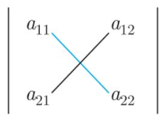
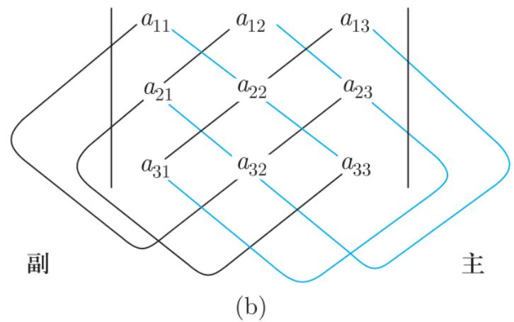
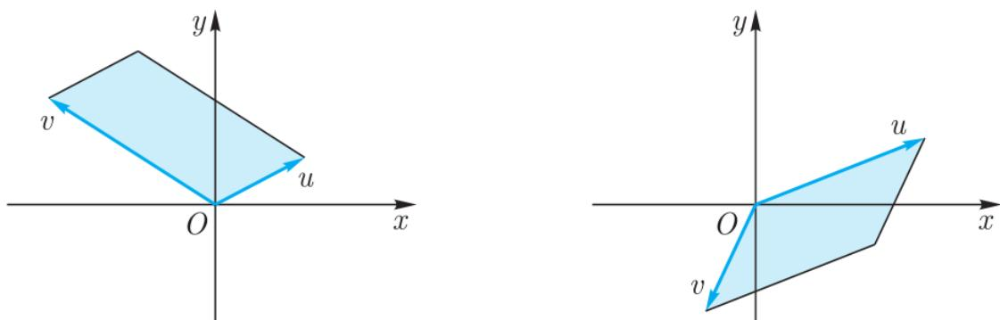
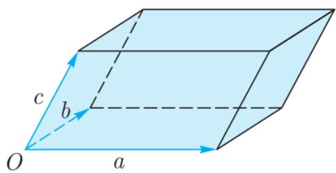

§7.1 行列式的定义与公式刻画尽管本书将行列式归结为方阵的行列式, 然而历史上行列式先于矩阵 160 多年由日本数学家 Seki Kowa (关孝和) 和德国数学家 G. W. Leibniz (莱布尼茨) 在研究线性方程组的求解过程中产生. 本书所用的关于 n 阶行列式的公式定义由瑞典数学家 G. Cramer (克拉默) 率先给出.
有些读者可能在解析几何与中学的解方程组过程中已经用到了二阶和三阶的行列式, 对它们的定义并不陌生, 所以下面我们用归纳的观点给出 n n
设 A = ( a i j ) n × n A = (a_{ij})_{n \times n} F F n n A A i i j j n − 1 n - 1 B i j B_{ij}
定义 7.1.1 设 F 是域, F n × n F^{n \times n} 概念定义 定义 7.1.1 设 F 是域, F n × n F^{n \times n}
是由以下条件归纳定义的函数:
当 n = 1 时, det ( a 11 ) = a 11 \det(a_{11}) = a_{11} 对 n > 1 n > 1 称 det ( A ) \det(A) | A | |A|
由此定义可见, 对于一个矩阵我们经常需要考虑其部分元素所形成的矩阵的行列式, 称为子式. 对 n n A A M i j = d e f | B i j | M_{ij} \stackrel{\mathrm{def}}{=} |B_{ij}| a i j a_{ij} A i j = d e f ( − 1 ) i + j M i j A_{ij} \stackrel{\mathrm{def}}{=} (-1)^{i+j} M_{ij} a i j a_{ij}
通常称行列式中连接 a 11 a_{11} a n n a_{nn} a 1 n a_{1n} a n 1 a_{n1}
例 7.1.1 一阶行列式 | ( a 11 ) | = a 11 \left|(a_{11})\right|=a_{11} 经典例题 例 7.1.1 一阶行列式 | ( a 11 ) | = a 11 \left|(a_{11})\right|=a_{11}
例7.1.2 二阶行列式 经典例题
例7.1.2 二阶行列式
其直观解释为: 若用主副对角线来划分二阶行列式的元素, 则二阶行列式等于主对角线上的元素之积减去副对角线上元素之积 (见图 7.1 (a)).

image (a)

image
图 7.1 二阶、三阶行列式计算示意图 图解
图 7.1 二阶、三阶行列式计算示意图
例7.1.3 三阶行列式 经典例题
例7.1.3 三阶行列式
上式可解释为图 7.1 (b) 中行列式三条蓝色线上元素积之和减去三条黑色线上元素积之和.
image 此定向为 1 当且仅当 α \alpha u u θ ( 0 < θ < π ) \theta (0 < \theta < \pi) v v α \alpha u , v u, v
这给出了二阶实行列式的几何意义.

image
图 7.2 u, v 张成的平行四边形 图解
图 7.2 u, v 张成的平行四边形
类似地, 列向量空间 ℝ 3 \mathbb{R}^3 α = { a , b , c } \alpha = \{a, b, c\} ℝ 3 \mathbb{R}^3 α \alpha
此定向为 1 当且仅当 α \alpha α \alpha a , b , c a, b, c
这给出了三阶实行列式的几何意义.

image 图7.3 a , b , c a, b, c
下面我们给出矩阵行列式的一个等价定义．为此我们首先简单介绍 n-排列．对正整数 n，一个n-排列是指由 1 , 2 , ⋯ , n 1,2,\cdots,n i 1 i 2 ⋯ i n i_{1}i_{2}\cdots i_{n} 12 ⋯ n 12\cdots n
注7.1.2 我们可以将全体 n n n n S n S_{n} n n i 1 i 2 ⋯ i n i_{1}i_{2}\cdots i_{n} { 1 , 2 , ⋯ , n } → { 1 , 2 , ⋯ , n } , k ↦ i k \{1,2,\cdots,n\} \to \{1,2,\cdots,n\}, k \mapsto i_{k} S n S_{n} σ : { 1 , 2 , ⋯ , n } → { 1 , 2 , ⋯ , n } \sigma: \{1,2,\cdots,n\} \to \{1,2,\cdots,n\} n n σ ( 1 ) σ ( 2 ) ⋯ σ ( n ) \sigma(1)\sigma(2)\cdots\sigma(n) n n S n S_{n}
一般地, 考虑任意互不相同的整数 i 1 , i 2 , ⋯ , i n i_{1}, i_{2}, \cdots, i_{n}
若 1 ≤ k < l ≤ n 1 \leqslant k < l \leqslant n i k > i l i_{k} > i_{l} i k i_{k} i l i_{l} i 1 i 2 ⋯ i n i_{1}i_{2}\cdots i_{n} i 1 i 2 ⋯ i n i_{1}i_{2}\cdots i_{n} τ ( i 1 i 2 ⋯ i n ) \tau(i_{1}i_{2}\cdots i_{n})
若记 τ ( i j ) \tau(i_{j}) i j i_{j} i j i_{j} j = 1 , 2 , ⋯ , n − 1 j=1,2,\cdots,n-1
类似地, 若记 τ ′ ( i j ) \tau'(i_{j}) i j i_{j} i j i_{j} j = 2 , 3 , ⋯ , n j = 2, 3, \cdots, n
例如 τ ( 53412 ) = 8 , τ ( 12 ⋯ n ) = 0 , τ ( n ( n − 1 ) ⋯ 1 ) = n ( n − 1 ) / 2. \tau(53412)=8,\tau(12\cdots n)=0,\tau(n(n-1)\cdots1)=n(n-1)/2.
下面假设 i 1 i 2 ⋯ i n i_{1}i_{2}\cdots i_{n} τ ( i 1 i 2 ⋯ i n ) \tau(i_{1}i_{2}\cdots i_{n}) i 1 i 2 ⋯ i n i_{1}i_{2}\cdots i_{n} 1 ≤ k < l ≤ n 1 \leqslant k < l \leqslant n i 1 ⋯ i k ⋯ i l ⋯ i n i_{1}\cdots i_{k}\cdots i_{l}\cdots i_{n}
的过程称为一次对换.
定理 7.1.1 设 n ≥ 2 n \geqslant 2 核心定理 定理 7.1.1 设 n ≥ 2 n \geqslant 2
证明 我们需要证明排列 (7.2) 与 (7.1) 奇偶性不同. 证明可分为两步. 证明
证明 我们需要证明排列 (7.2) 与 (7.1) 奇偶性不同. 证明可分为两步.
第一步 设 l = k + 1 l = k + 1 i k i_k i k + 1 i_{k+1}
故排列 (7.1) 与 (7.2) 奇偶性不同.
第二步 设 l ≥ k + 2 l \geqslant k + 2 2 ( l − k ) − 1 2(l - k) - 1 i k i_k l − k l - k n n
再将排列 (7.3) 中 i l i_l l − k − 1 l - k - 1 2 ( l − k ) − 1 2(l - k) - 1
定理 7.1.2 设 n ≥ 2 n \geqslant 2 n ! / 2 n!/2 核心定理 定理 7.1.2 设 n ≥ 2 n \geqslant 2 n ! / 2 n!/2
证明 对 n ≥ 2 n \geqslant 2 n n A n A_{n} B n B_{n} n n 证明 证明 对 n ≥ 2 n \geqslant 2 n n A n A_{n} B n B_{n} n n f : S n → S n f: S_{n} \to S_{n} f 2 = i d S n f^{2} = \mathrm{id}_{S_{n}} f f f f f | A n : A n → B n f|_{A_{n}}: A_{n} \to B_{n} f | B n : B n → A n f|_{B_{n}}: B_{n} \to A_{n} f | A n f|_{A_{n}} f | B n f|_{B_{n}} | A n | = | B n | = n ! / 2 |A_{n}| = |B_{n}| = n! / 2
现在可以给出行列式的公式定义. 由于 n n S n S_{n}
定理7.1.3 设 A = ( a i j ) n × n ∈ F n × n A = (a_{ij})_{n\times n}\in F^{n\times n} 核心定理 定理7.1.3 设 A = ( a i j ) n × n ∈ F n × n A = (a_{ij})_{n\times n}\in F^{n\times n}
证明 对 n n n = 1 n = 1 n − 1 n - 1 n n 证明 证明 对 n n n = 1 n = 1 n − 1 n - 1 n n
对 j = 1 , 2 , ⋯ , n j=1,2,\cdots,n S n , j = { j 1 j 2 ⋯ j n ∈ S n ∣ j 1 = j } S_{n,j}=\{j_{1}j_{2}\cdots j_{n}\in S_{n}\mid j_{1}=j\}
那么显然有
注意到 S n , j , j = 1 , 2 , ⋯ , n S_{n,j}, j = 1, 2, \cdots, n S n S_{n}
因此由归纳法知结论成立.
其中空
白处表示该部分矩阵元均为零. 通常称上式左边的行列式为上三角形行列式, 称右边的行列式为下三角形行列式.
证明 我们先证明第一个等式. 由定理 7.1.3, 对上三角形行列式, (7.4) 中第 n 行元素不取 a n n a_{nn} 证明 证明 我们先证明第一个等式. 由定理 7.1.3, 对上三角形行列式, (7.4) 中第 n 行元素不取 a n n a_{nn} a n n a_{nn} a n − 1 , n − 1 a_{n-1,n-1} a i i a_{ii} i = 1 , 2 , ⋯ , n i = 1, 2, \cdots, n
第二个等式的证明类似.
若按 (7.4) 式来计算一个 n n ( n − 1 ) · n ! (n - 1) \cdot n! n n
引理 7.1.1 若 1 ≤ k & l t ; l ≤ n 1 \leqslant k < l \leqslant n i 1 i 2 ⋯ i n i_{1}i_{2}\cdots i_{n} 命题/引理 引理 7.1.1 若 1 ≤ k < l ≤ n 1 \leqslant k < l \leqslant n i 1 i 2 ⋯ i n i_{1}i_{2}\cdots i_{n} j 1 j 2 ⋯ j n j_{1}j_{2}\cdots j_{n} i 1 ⋯ i l ⋯ i k ⋯ i n i_{1}\cdots i_{l}\cdots i_{k}\cdots i_{n} j 1 ⋯ j l ⋯ j k ⋯ j n j_{1}\cdots j_{l}\cdots j_{k}\cdots j_{n}
证明 由定理 7.1.1, i 1 i 2 ⋯ i n i_{1}i_{2}\cdots i_{n} 证明 证明 由定理 7.1.1, i 1 i 2 ⋯ i n i_{1}i_{2}\cdots i_{n} i 1 ⋯ i l ⋯ i k ⋯ i n i_{1}\cdots i_{l}\cdots i_{k}\cdots i_{n}
同理 ( − 1 ) τ ( j 1 j 2 ⋯ j n ) = − ( − 1 ) τ ( j 1 ⋯ j l ⋯ j k ⋯ j n ) (-1)^{\tau(j_{1}j_{2}\cdots j_{n})} = -(-1)^{\tau(j_{1}\cdots j_{l}\cdots j_{k}\cdots j_{n})}
定理 7.1.4 设 A = ( a i j ) n × n ∈ F n × n A = (a_{ij})_{n \times n} \in F^{n \times n} 核心定理 定理 7.1.4 设 A = ( a i j ) n × n ∈ F n × n A = (a_{ij})_{n \times n} \in F^{n \times n}
取定 n-排列 i 1 i 2 ⋯ i n i_{1}i_{2}\cdots i_{n} 取定 n- 排列 j 1 j 2 ⋯ j n j_{1}j_{2}\cdots j_{n} 特别地, 有 | A | = ∑ i 1 i 2 ⋯ i n ∈ S n ( − 1 ) τ ( i 1 i 2 ⋯ i n ) a i 1 1 a i 2 2 ⋯ a i n n |A| = \sum_{i_1 i_2 \cdots i_n \in S_n} (-1)^{\tau(i_1 i_2 \cdots i_n)} a_{i_1 1} a_{i_2 2} \cdots a_{i_n n}
证明 (i) 显然标准排列 12 ⋯ n 12 \cdots n i 1 i 2 ⋯ i n i_1 i_2 \cdots i_n 证明 证明 (i) 显然标准排列 12 ⋯ n 12 \cdots n i 1 i 2 ⋯ i n i_1 i_2 \cdots i_n n n k 1 k 2 ⋯ k n k_1 k_2 \cdots k_n j 1 j 2 ⋯ j n j_1 j_2 \cdots j_n k 1 k 2 ⋯ k n k_1 k_2 \cdots k_n n n j 1 j 2 ⋯ j n j_1 j_2 \cdots j_n n n
任意 n n k 1 k 2 ⋯ k n k_{1}k_{2}\cdots k_{n} j 1 j 2 ⋯ j n j_{1}j_{2}\cdots j_{n} 12 ⋯ n 12\cdots n i 1 i 2 ⋯ i n i_{1}i_{2}\cdots i_{n} j 1 j 2 ⋯ j n = k i 1 k i 2 ⋯ k i n j_{1}j_{2}\cdots j_{n} = k_{i_{1}}k_{i_{2}}\cdots k_{i_{n}} k 1 k 2 ⋯ k n k_{1}k_{2}\cdots k_{n} n n i 1 i 2 ⋯ i n i_{1}i_{2}\cdots i_{n} n n 习题 习题 7.1计算以下排列的逆序数, 从而确定它们的奇偶性: 135786492; (ii) 76254813; (iii) 13 ⋯ ( 2 n − 1 ) ( 2 n ) ( 2 n − 2 ) ⋯ 2 13 \cdots (2n - 1)(2n)(2n - 2) \cdots 2 147 ⋯ ( 3 n − 2 ) 258 ⋯ ( 3 n − 1 ) 369 ⋯ ( 3 n ) 147 \cdots (3n - 2)258 \cdots (3n - 1)369 \cdots (3n) (i) 确定 i, j 使得 52i4167j9 是奇排列; (ii) 确定 i, j 使得 217i86j54 是偶排列. 设 n-排列 i 1 i 2 ⋯ i n − 1 i n i_{1}i_{2}\cdots i_{n-1}i_{n} i n i n − 1 ⋯ i 2 i 1 i_{n}i_{n-1}\cdots i_{2}i_{1} (i) 求证: 若 n-排列 i 1 i 2 ⋯ i n i_{1}i_{2}\cdots i_{n} i 1 i 2 ⋯ i n i_{1}i_{2}\cdots i_{n} 12 ⋯ n 12\cdots n 排列 54321 可经至少多少次对换化为 12345? 确定行列式中下列各项前面的符号: a 12 a 21 a 34 a 45 a 53 ; a_{12}a_{21}a_{34}a_{45}a_{53}; a 25 a 34 a 51 a 72 a 66 a 17 a 43 a_{25}a_{34}a_{51}a_{72}a_{66}a_{17}a_{43} 证明 并求其值.
计算下列行列式: (i)
求证: 若 n n A A − 2 -2 2 2 n − 1 2^{2n-1} | A | |A| 设 A ( t ) = ( a i j ( t ) ) n × n A(t) = (a_{ij}(t))_{n \times n} a i j ( t ) a_{ij}(t) ℝ \mathbb{R} 对 σ ∈ S n \sigma \in S_n sgn ( σ ) = ∏ 1 ≤ i < j ≤ n σ ( j ) − σ ( i ) j − i ∈ { ± 1 } \operatorname{sgn}(\sigma) = \prod_{1 \leqslant i < j \leqslant n} \frac{\sigma(j) - \sigma(i)}{j - i} \in \{\pm 1\} s g n ( σ ) = ( − 1 ) τ ( σ ) \mathrm{sgn}(\sigma)=(-1)^{\tau(\sigma)} τ ( σ ) \tau(\sigma) σ ( 1 ) σ ( 2 ) ⋯ σ ( n ) \sigma(1)\sigma(2)\cdots\sigma(n) sgn ( σ 1 σ 2 ) = sgn ( σ 1 ) sgn ( σ 2 ) , ∀ σ 1 , σ 2 ∈ S n . \operatorname{sgn}(\sigma_{1}\sigma_{2})=\operatorname{sgn}(\sigma_{1})\operatorname{sgn}(\sigma_{2}),\;\forall\sigma_{1},\sigma_{2}\in S_{n}. σ 1 σ 2 \sigma_{1}\sigma_{2} S n S_{n} { 1 , 2 , ⋯ , n } \{1,2,\cdots,n\} §7.2 行列式的性质本节中考虑域 F F
由第六章知任何一个方阵总可经初等变换化为标准形. 根据例 7.1.4, 上 (下) 三角形矩阵的行列式是容易计算的. 由于方阵的标准形总是对角矩阵, 因此若有初等变换下矩阵行列式的变化性质, 则容易计算行列式的值. 从而在下面行列式的性质中, 最核心的就是与初等变换, 即互换、倍乘、倍加相关的性质. 我们首先有
性质 7.2.1 对 A ∈ F n × n A \in F^{n \times n} | A | = | A T | |A| = |A^{T}| 性质 性质 7.2.1 对 A ∈ F n × n A \in F^{n \times n} | A | = | A T | |A| = |A^{T}|
证明 若 A = ( a i j ) n × n A = (a_{ij})_{n \times n} A T = ( b i j ) n × n A^{\mathrm{T}} = (b_{ij})_{n \times n} 证明 证明 若 A = ( a i j ) n × n A = (a_{ij})_{n \times n} A T = ( b i j ) n × n A^{\mathrm{T}} = (b_{ij})_{n \times n} b i j = a j i , i , j = 1 , 2 , ⋯ , n b_{ij} = a_{ji}, i, j = 1, 2, \cdots, n
由性质 7.2.1 知行列式在矩阵转置下不变, 这表明在行列式的计算中行与列是对称的, 从而行列式对于行成立的性质, 对于列也类似地成立. 基于此, 在本节中我们仅证明行列式与行相关的性质.
性质 7.2.2 (互换) 交换方阵两行 (列) 对应元素的位置, 行列式变号. 性质
性质 7.2.2 (互换) 交换方阵两行 (列) 对应元素的位置, 行列式变号.
证明 设 1 ≤ k & l t ; l ≤ n 1 \leqslant k < l \leqslant n 证明 证明 设 1 ≤ k < l ≤ n 1 \leqslant k < l \leqslant n A = ( a i j ) n × n ⟶ R k l B = ( b i j ) n × n A = (a_{ij})_{n \times n} \xrightarrow{R_{kl}} B = (b_{ij})_{n \times n}
于是由引理7.1.1有
其中 1 ⋯ l ⋯ k ⋯ n 1 \cdots l \cdots k \cdots n k k l l □ \square
作为推论, 若 A ∈ F n × n A \in F^{n \times n} | A | = − | A | |A| = -|A| F F | A | = 0 |A| = 0 F F
性质 7.2.3 若方阵有两行 (列) 对应元素相同, 则其行列式为零. 性质
性质 7.2.3 若方阵有两行 (列) 对应元素相同, 则其行列式为零.
证明 设 A = ( a i j ) n × n ∈ F n × n , 1 ≤ k & l t ; l ≤ n A=(a_{ij})_{n\times n}\in F^{n\times n},1\leqslant k<l\leqslant n 证明 证明 设 A = ( a i j ) n × n ∈ F n × n , 1 ≤ k < l ≤ n A=(a_{ij})_{n\times n}\in F^{n\times n},1\leqslant k<l\leqslant n a k j = a l j , j = 1 , 2 , ⋯ , n . a_{kj}=a_{lj},j=1,2,\cdots,n. A n , B n A_{n},B_{n} S n S_{n} k k l l A n → B n A_{n} \rightarrow B_{n}
性质 7.2.4 (倍乘) 对方阵某行 (列) 元素均乘以 c ∈ F c \in F 性质 性质 7.2.4 (倍乘) 对方阵某行 (列) 元素均乘以 c ∈ F c \in F
证明 若 A ⟶ c R i B A \xrightarrow{cR_i} B 证明 证明 若 A ⟶ c R i B A \xrightarrow{cR_i} B
推论 7.2.1 若方阵某行 (列) 元素均是另一行 (列) 对应元素的 c 倍, c ∈ F c \in F 推论 推论 7.2.1 若方阵某行 (列) 元素均是另一行 (列) 对应元素的 c 倍, c ∈ F c \in F
证明 由性质7.2.3与性质7.2.4即得. 证明
证明 由性质7.2.3与性质7.2.4即得.
性质 7.2.5 (分拆) 若 A , B , C ∈ F n × n A, B, C \in F^{n \times n} 性质 性质 7.2.5 (分拆) 若 A , B , C ∈ F n × n A, B, C \in F^{n \times n} a i j = b i j + c i j a_{ij} = b_{ij} + c_{ij} ( a j i = b j i + c j i ) (a_{ji} = b_{ji} + c_{ji}) k ≠ i k \neq i a k j = b k j = c k j a_{kj} = b_{kj} = c_{kj} ( a j k = b j k = c j k ) (a_{jk} = b_{jk} = c_{jk}) | A | = | B | + | C | |A| = |B| + |C|
性质 7.2.6 (倍加) 将方阵某行 (列) 元素均乘以 c ∈ F c \in F 性质 性质 7.2.6 (倍加) 将方阵某行 (列) 元素均乘以 c ∈ F c \in F
证明 设… 证明
证明 设 A = ( a i j ) n × n ⟶ R k + c R l B = ( b i j ) n × n A = (a_{ij})_{n \times n} \xrightarrow{R_k + cR_l} B = (b_{ij})_{n \times n} k , l k, l n n
令 C = ( c i j ) n × n C = (c_{ij})_{n\times n}
那么由性质 7.2.5 有 | B | = | A | + | C | |B|=|A|+|C| | C | = 0 |C|=0 | B | = | A | |B|=|A|
例 7.2.1 计算… 经典例题
例 7.2.1 计算 D = | 3 1 − 1 2 − 5 1 3 − 4 2 0 1 − 1 1 − 5 3 − 3 | D = \begin{vmatrix} 3 & 1 & -1 & 2 \\ -5 & 1 & 3 & -4 \\ 2 & 0 & 1 & -1 \\ 1 & -5 & 3 & -3 \end{vmatrix}
解 由行列式在矩阵初等变换下的性质以及例7.1.4有 解答
解 由行列式在矩阵初等变换下的性质以及例7.1.4有
例7.2.2 计算… 经典例题
例7.2.2 计算 D = | 1 2 3 4 2 3 4 1 3 4 1 2 4 1 2 3 | D = \left| \begin{array}{cccc}1 & 2 & 3 & 4\\ 2 & 3 & 4 & 1\\ 3 & 4 & 1 & 2\\ 4 & 1 & 2 & 3 \end{array} \right|
解 由行列式在矩阵初等变换下的性质以及例 7.1.4 有 解答
解 由行列式在矩阵初等变换下的性质以及例 7.1.4 有
例 7.2.3 简化行列式… 经典例题
例 7.2.3 简化行列式 | b + c c + a a + b b 1 + c 1 c 1 + a 1 a 1 + b 1 b 2 + c 2 c 2 + a 2 a 2 + b 2 | \begin{vmatrix} b+c & c+a & a+b \\ b_{1}+c_{1} & c_{1}+a_{1} & a_{1}+b_{1} \\ b_{2}+c_{2} & c_{2}+a_{2} & a_{2}+b_{2} \end{vmatrix}
□
解
□
习题 习题 7.2计算下列行列式的值: (i)
(vi)
计算下列行列式的值: (v)
已知 1798, 2139, 3255, 4867 均可被 31 整除. 不必计算, 证明行列式 | 1 7 9 8 2 1 3 9 3 2 5 5 4 8 6 7 | \begin{vmatrix}1 & 7 & 9 & 8 \\ 2 & 1 & 3 & 9 \\ 3 & 2 & 5 & 5 \\ 4 & 8 & 6 & 7\end{vmatrix} 也可被 31 整除.
设 A = ( a i j ) n × n , B = ( b i j ) n × n A = (a_{ij})_{n \times n}, B = (b_{ij})_{n \times n} ⋯ \cdots b i j = 2 a i j − ∑ k = 1 n a i k b_{ij} = 2a_{ij} - \sum_{k=1}^{n} a_{ik} | B | = ( 2 − n ) 2 n − 1 | A | |B| = (2 - n)2^{n-1}|A| §7.3 行列式的 Laplace 展开本节讨论行列式的递推性质——按某些行 (列) 展开行列式.
(一) 行列式按某行 (列) 展开
定理 7.3.1 设 A ∈ F n × n A \in F^{n \times n} i = 1 , 2 , ⋯ , n i = 1, 2, \cdots, n 核心定理 定理 7.3.1 设 A ∈ F n × n A \in F^{n \times n} i = 1 , 2 , ⋯ , n i = 1, 2, \cdots, n
证明 由行列式的性质7.2.2以及定义7.1.1有 证明
证明 由行列式的性质7.2.2以及定义7.1.1有
再由性质 7.2.1, 即 | A | = | A T | |A| = |A^{T}|
进一步地, 有如下重要公式:
事实上当 i = j i = j i ≠ j i \neq j A A j j i i
引入 Kronecker (克罗内克) δ \delta δ i j = { 1 , i = j , 0 , i ≠ j , \delta_{ij} = \begin{cases} 1, & i = j, \\ 0, & i \neq j, \end{cases}
例 7.3.1 计算行列式… 经典例题
例 7.3.1 计算行列式 D = | 1 2 3 4 1 0 1 2 3 − 1 − 1 0 1 2 0 − 5 | D = \begin{vmatrix} 1 & 2 & 3 & 4 \\ 1 & 0 & 1 & 2 \\ 3 & -1 & -1 & 0 \\ 1 & 2 & 0 & -5 \end{vmatrix}
解
例 7.3.2 (Vandermonde (范德蒙德) 行列式) 设 n ≥ 2 n \geqslant 2 经典例题 例 7.3.2 (Vandermonde (范德蒙德) 行列式) 设 n ≥ 2 n \geqslant 2
证明 对 n n n = 2 n = 2 D 2 = x 2 − x 1 D_{2} = x_{2} - x_{1} n ≥ 3 n \geqslant 3 证明 证明 对 n n n = 2 n = 2 D 2 = x 2 − x 1 D_{2} = x_{2} - x_{1} n ≥ 3 n \geqslant 3 D n − 1 D_{n-1}
将右边行列式先按第 n 列展开, 再提出 n-1 阶行列式中各列公因子可得
由归纳假设有 D n − 1 = ∏ 1 ≤ j < i ≤ n − 1 ( x i − x j ) D_{n - 1} = \prod_{1\leqslant j < i\leqslant n - 1}(x_i - x_j) D n D_{n}
例 7.3.3 计算 n 阶行列式… 经典例题
例 7.3.3 计算 n 阶行列式 D n = | a + x 1 a ⋯ a a a + x 2 ⋯ a ⋮ ⋮ ⋮ a a ⋯ a + x n | D_{n}=\left|\begin{array}{cccc}a+x_{1}&a&\cdots&a\\a&a+x_{2}&\cdots&a\\\vdots&\vdots&&\vdots\\a&a&\cdots&a+x_{n}\end{array}\right|
同理可得 D n − 1 = a x 1 x 2 ⋯ x n − 2 + x n − 1 D n − 2 , ⋯ , D 2 = a x 1 + x 2 D 1 , D 1 = a + x 1 D_{n-1}=ax_{1}x_{2}\cdots x_{n-2}+x_{n-1}D_{n-2},\cdots,D_{2}=ax_{1}+x_{2}D_{1},D_{1}=a+x_{1}
(二) 行列式按多行 (列) 展开
设 A ∈ F m × n , 1 ≤ k ≤ min { m , n } A \in F^{m \times n}, 1 \leqslant k \leqslant \min\{m, n\} i 1 , i 2 , ⋯ , i k i_{1}, i_{2}, \cdots, i_{k} j 1 , j 2 , ⋯ , j k j_{1}, j_{2}, \cdots, j_{k} 1 ≤ i 1 < i 2 < ⋯ < i k ≤ m , 1 ≤ j 1 < j 2 < ⋯ < j k ≤ n 1 \leqslant i_{1} < i_{2} < \cdots < i_{k} \leqslant m, 1 \leqslant j_{1} < j_{2} < \cdots < j_{k} \leqslant n a ( i 1 i 2 ⋯ i k j 1 j 2 ⋯ j k ) a\left(\begin{array}{cccc}i_{1} & i_{2} & \cdots & i_{k}\\ & & & \\ j_{1} & j_{2} & \cdots & j_{k}\end{array}\right)
下面设 A 为 n 阶方阵. 若 k < n, 划去 A 中第 i 1 , i 2 , ⋯ , i k i_{1}, i_{2}, \cdots, i_{k} j 1 , j 2 , ⋯ , j k j_{1}, j_{2}, \cdots, j_{k} a ( i 1 i 2 ⋯ i k j 1 j 2 ⋯ j k ) a\left(\begin{array}{cccc}i_{1} & i_{2} & \cdots & i_{k}\\ j_{1} & j_{2} & \cdots & j_{k}\end{array}\right) M ( i 1 i 2 ⋯ i k j 1 j 2 ⋯ j k ) M\left(\begin{array}{cccc}i_{1} & i_{2} & \cdots & i_{k}\\ j_{1} & j_{2} & \cdots & j_{k}\end{array}\right)
为 a ( i 1 i 2 ⋯ i k j 1 j 2 ⋯ j k ) a\left(\begin{array}{cccc}i_{1}&i_{2}&\cdots&i_{k}\\ j_{1}&j_{2}&\cdots&j_{k}\end{array}\right) | A | |A| | A | |A|
例如设 A = ( 1 3 2 4 0 2 1 0 3 1 2 2 1 0 1 0 ) A = \begin{pmatrix} 1 & 3 & 2 & 4 \\ 0 & 2 & 1 & 0 \\ 3 & 1 & 2 & 2 \\ 1 & 0 & 1 & 0 \end{pmatrix} a ( 1 3 2 4 ) = | 3 4 1 2 | a\begin{pmatrix} 1 & 3 \\ 2 & 4 \end{pmatrix} = \begin{vmatrix} 3 & 4 \\ 1 & 2 \end{vmatrix} M ( 1 3 2 4 ) = | 0 1 1 1 | M\begin{pmatrix} 1 & 3 \\ 2 & 4 \end{pmatrix} = \begin{vmatrix} 0 & 1 \\ 1 & 1 \end{vmatrix} A ( 1 3 2 4 ) = ( − 1 ) 1 + 3 + 2 + 4 M ( 1 3 2 4 ) = M ( 1 3 2 4 ) A\begin{pmatrix} 1 & 3 \\ 2 & 4 \end{pmatrix} = (-1)^{1+3+2+4} M\begin{pmatrix} 1 & 3 \\ 2 & 4 \end{pmatrix} = M\begin{pmatrix} 1 & 3 \\ 2 & 4 \end{pmatrix}
定理 7.3.2 (Laplace (拉普拉斯) 定理) 设 A ∈ F n × n , 1 ≤ k ≤ n A \in F^{n \times n}, 1 \leqslant k \leqslant n 核心定理 定理 7.3.2 (Laplace (拉普拉斯) 定理) 设 A ∈ F n × n , 1 ≤ k ≤ n A \in F^{n \times n}, 1 \leqslant k \leqslant n
取定 1 ≤ i 1 < i 2 < ⋯ < i k ≤ n , 1 \leqslant i_{1} < i_{2} < \cdots < i_{k} \leqslant n, | A | |A| i 1 , i 2 , ⋯ , i k i_{1}, i_{2}, \cdots, i_{k} 取定 1 ≤ j 1 < j 2 < ⋯ < j k ≤ n , 1 \leqslant j_{1} < j_{2} < \cdots < j_{k} \leqslant n, | A | |A| j 1 , j 2 , ⋯ , j k j_{1}, j_{2}, \cdots, j_{k}
证明 我们只证明 (i), 由 (i) 及 | A | = | A T | |A| = |A^{\mathrm{T}}| 证明 证明 我们只证明 (i), 由 (i) 及 | A | = | A T | |A| = |A^{\mathrm{T}}|
为此我们将 (7.7) 式中行列式按定理 7.1.4 (i) 展开, 并证明等式两边相等. 记
记 S j 1 j 2 ⋯ j k S_{j_{1}j_{2}\cdots j_{k}} j 1 , j 2 , ⋯ , j k j_{1}, j_{2}, \cdots, j_{k} S j k + 1 j k + 2 ⋯ j n S_{j_{k+1}j_{k+2}\cdots j_{n}}
不难看出上面和式中 j 1 ′ j 2 ′ ⋯ j n ′ j_{1}^{\prime}j_{2}^{\prime}\cdots j_{n}^{\prime} S n S_{n}
直接计算逆序数可得
由此可得
容易验证 τ ( j 1 ′ j 2 ′ ⋯ j n ′ ) = τ ( j 1 j 2 ⋯ j n ) + τ ( j 1 ′ j 2 ′ ⋯ j k ′ ) + τ ( j k + 1 ′ j k + 2 ′ ⋯ j n ′ ) \tau(j_{1}^{\prime}j_{2}^{\prime}\cdots j_{n}^{\prime})=\tau(j_{1}j_{2}\cdots j_{n})+\tau(j_{1}^{\prime}j_{2}^{\prime}\cdots j_{k}^{\prime})+\tau(j_{k+1}^{\prime}j_{k+2}^{\prime}\cdots j_{n}^{\prime})
由 (7.9) 式和 (7.10) 式即得 (7.8) 式.
定理 7.3.2 可在计算某些特殊类型的行列式时发挥重要作用. 核心定理
定理 7.3.2 可在计算某些特殊类型的行列式时发挥重要作用.
(ii)
证明 (i) 在前 r r r r r r | A | |A| r r 证明 证明 (i) 在前 r r r r r r | A | |A| r r
按后 s 行展开可类似证明, 留作练习.
定理 7.3.3 若 A , B ∈ F n × n A, B \in F^{n \times n} | A B | = | A | | B | = | B A | |AB| = |A||B| = |BA| 核心定理 定理 7.3.3 若 A , B ∈ F n × n A, B \in F^{n \times n} | A B | = | A | | B | = | B A | |AB| = |A||B| = |BA|
证明 设 A = ( a i j ) n × n , B = ( b i j ) n × n A = (a_{ij})_{n \times n}, B = (b_{ij})_{n \times n} 证明 证明 设 A = ( a i j ) n × n , B = ( b i j ) n × n A = (a_{ij})_{n \times n}, B = (b_{ij})_{n \times n}
同理有 | B A | = | B | | A | |BA| = |B||A|
例 7.3.4 设 A , B ∈ F n × n , A B + I n = O , | A | = a ≠ 0. A, B \in F^{n \times n}, AB + I_{n} = O, |A| = a \neq 0. | B | |B| 经典例题 例 7.3.4 设 A , B ∈ F n × n , A B + I n = O , | A | = a ≠ 0. A, B \in F^{n \times n}, AB + I_{n} = O, |A| = a \neq 0. | B | |B|
解 由定理7.3.3, | A | | B | = | A B | = | − I n | = ( − 1 ) n |A||B| = |AB| = |-I_n| = (-1)^n 解答 解 由定理7.3.3, | A | | B | = | A B | = | − I n | = ( − 1 ) n |A||B| = |AB| = |-I_n| = (-1)^n | B | = ( − 1 ) n | A | − 1 = ( − 1 ) n a − 1 |B| = (-1)^n |A|^{-1} = (-1)^n a^{-1}
计算 | A | \left|A\right| t 1 A 11 + t 2 A 12 + ⋯ + t n A 1 n t_{1}A_{11} + t_{2}A_{12} + \cdots + t_{n}A_{1n} A i j A_{ij} 设域 F 特征不为 2, 求证: 若 A ∈ F n × n A \in F^{n \times n} | A | = 0 |A| = 0 设 A ∈ F n × n A \in F^{n \times n} n > 1 n > 1 | A | = 4 |A| = 4 A A ∑ i = 1 n ∑ j = 1 n A i j \sum_{i=1}^{n} \sum_{j=1}^{n} A_{ij} A i j A_{ij} 将 A = ( a i j ) n × n A = (a_{ij})_{n \times n} a i j a_{ij} A ′ A' | A | = | A ′ | |A| = |A'| 设 x 1 , x 2 , x 3 x_{1}, x_{2}, x_{3} f ( x ) = x 3 + p x + q f(x) = x^{3} + px + q 求证: (i) | A r × r C r × s O s × r B s × s | = | A | | B | ; ( i i ) | O r × s A r × r B s × s C s × r | = ( − 1 ) r s | A | | B | . \left|\begin{matrix}A_{r\times r}&C_{r\times s}\\O_{s\times r}&B_{s\times s}\end{matrix}\right|=|A||B|;\quad(\mathrm{ii})\left|\begin{matrix}O_{r\times s}&A_{r\times r}\\B_{s\times s}&C_{s\times r}\end{matrix}\right|=(-1)^{rs}|A||B|. 计算下列行列式: (i)
计算下列行列式: (i)
设 a 1 , a 2 , ⋯ , a n ∈ C a_{1}, a_{2}, \cdots, a_{n} \in C | A | |A| A = ( a 1 a 2 ⋯ a n − 1 a n a 2 a 3 ⋯ a n a 1 ⋮ ⋮ ⋮ ⋮ a n a 1 ⋯ a n − 2 a n − 1 ) A = \begin{pmatrix} a_{1} & a_{2} & \cdots & a_{n-1} & a_{n} \\ a_{2} & a_{3} & \cdots & a_{n} & a_{1} \\ \vdots & \vdots & & \vdots & \vdots \\ a_{n} & a_{1} & \cdots & a_{n-2} & a_{n-1} \end{pmatrix} (提示: 考虑 AB, 其中 B = ( ω ( i − 1 ) ( j − 1 ) ) n × n , ω = e 2 π i / n B = (\omega^{(i-1)(j-1)})_{n \times n}, \omega = \mathrm{e}^{2\pi i/n}
设 a i , b j ∈ F , a i + b j ≠ 0 , i , j = 1 , 2 , ⋯ , n . a_{i}, b_{j} \in F, a_{i} + b_{j} \neq 0, i, j = 1, 2, \cdots, n. | ( 1 a i + b j ) n × n | \left|\left(\frac{1}{a_{i} + b_{j}}\right)_{n \times n}\right| 定义 n 元多项式 证明该多项式与连分数的关系
证明: 对矩阵 A = ( a i j ) n × n A = (a_{ij})_{n \times n} n n j 1 j 2 ⋯ j n j_1 j_2 \cdots j_n 1 ≤ p < n 1 \leqslant p < n 其中 A i j A_{ij} a i j a_{ij}
§7.4 矩阵秩的行列式刻画本节中我们用矩阵的子式来刻画矩阵的秩. 显然矩阵 A ∈ F m × n A \in F^{m \times n} A = O A = O
引理 7.4.1 矩阵非零子式的最高阶数是初等变换下的不变量, 即若 A ∈ F m × n A \in F^{m \times n} 命题/引理 引理 7.4.1 矩阵非零子式的最高阶数是初等变换下的不变量, 即若 A ∈ F m × n A \in F^{m \times n}
证明 由于初等变换可逆且逆变换仍为初等变换, 只需对任意正整数 k k A A k k B B k k 证明 证明 由于初等变换可逆且逆变换仍为初等变换, 只需对任意正整数 k k A A k k B B k k A A B B
为方便起见, 将 A 和 B 取第 i 1 , i 2 , ⋯ , i k i_{1}, i_{2}, \cdots, i_{k} j 1 , j 2 , ⋯ , j k j_{1}, j_{2}, \cdots, j_{k} a ( i 1 i 2 ⋯ i k j 1 j 2 ⋯ j k ) a\left(\begin{array}{cccc}i_{1}&i_{2}&\cdots&i_{k}\\j_{1}&j_{2}&\cdots&j_{k}\end{array}\right) b ( i 1 i 2 ⋯ i k j 1 j 2 ⋯ j k ) b\left(\begin{array}{cccc}i_{1}&i_{2}&\cdots&i_{k}\\j_{1}&j_{2}&\cdots&j_{k}\end{array}\right) i 1 , i 2 , ⋯ , i k i_{1}, i_{2}, \cdots, i_{k} a ( i 1 i 2 ⋯ i k j 1 j 2 ⋯ j k ) ≠ 0 a\left(\begin{array}{cccc}i_{1}&i_{2}&\cdots&i_{k}\\j_{1}&j_{2}&\cdots&j_{k}\end{array}\right)\neq0
设 A ⟶ R i j B A \xrightarrow{R_{ij}} B 若 i , j ∉ { i 1 , i 2 , ⋯ , i k } i, j \notin \{i_{1}, i_{2}, \cdots, i_{k}\} b ( i 1 i 2 ⋯ i k j 1 j 2 ⋯ j k ) = a ( i 1 i 2 ⋯ i k j 1 j 2 ⋯ j k ) b\left(\begin{array}{cccc} i_{1} & i_{2} & \cdots & i_{k} \\ j_{1} & j_{2} & \cdots & j_{k} \end{array}\right) = a\left(\begin{array}{cccc} i_{1} & i_{2} & \cdots & i_{k} \\ j_{1} & j_{2} & \cdots & j_{k} \end{array}\right)
若 i , j ∈ { i 1 , i 2 , ⋯ , i k } i, j \in \{i_{1}, i_{2}, \cdots, i_{k}\} b ( i 1 i 2 ⋯ i k j 1 j 2 ⋯ j k ) = − a ( i 1 i 2 ⋯ i k j 1 j 2 ⋯ j k ) b\left(\begin{array}{cccc}i_{1}&i_{2}&\cdots&i_{k}\\ & & & \\ j_{1}&j_{2}&\cdots&j_{k}\end{array}\right) = -a\left(\begin{array}{cccc}i_{1}&i_{2}&\cdots&i_{k}\\ & & & \\ j_{1}&j_{2}&\cdots&j_{k}\end{array}\right) i = i l i = i_{l} 1 ≤ l ≤ k 1 \leqslant l \leqslant k j ∉ { i 1 , i 2 , ⋯ , i k } j \notin \{i_{1}, i_{2}, \cdots, i_{k}\}
设 A ⟶ c R i B A \xrightarrow{cR_i} B c ∈ F c \in F 若 i ∉ { i 1 , i 2 , ⋯ , i k } i \notin \{i_{1}, i_{2}, \cdots, i_{k}\} b ( i 1 i 2 ⋯ i k j 1 j 2 ⋯ j k ) = a ( i 1 i 2 ⋯ i k j 1 j 2 ⋯ j k ) b\left(\begin{array}{cccc} i_{1} & i_{2} & \cdots & i_{k} \\ j_{1} & j_{2} & \cdots & j_{k} \end{array}\right)=a\left(\begin{array}{cccc} i_{1} & i_{2} & \cdots & i_{k} \\ j_{1} & j_{2} & \cdots & j_{k} \end{array}\right)
若 i ∈ { i 1 , i 2 , ⋯ , i k } i \in \{i_{1}, i_{2}, \cdots, i_{k}\} b ( i 1 i 2 ⋯ i k j 1 j 2 ⋯ j k ) = c · a ( i 1 i 2 ⋯ i k j 1 j 2 ⋯ j k ) b\left(\begin{array}{cccc}i_{1}&i_{2}&\cdots&i_{k}\\ & & & \\ j_{1}&j_{2}&\cdots&j_{k}\end{array}\right)=c \cdot a\left(\begin{array}{cccc}i_{1}&i_{2}&\cdots&i_{k}\\ & & & \\ j_{1}&j_{2}&\cdots&j_{k}\end{array}\right)
设 A ⟶ R i + c R j B A \xrightarrow{R_i + cR_j} B c ∈ F c \in F 若 i ∉ { i 1 , i 2 , ⋯ , i k } i \notin \{i_{1}, i_{2}, \cdots, i_{k}\} i , j ∈ { i 1 , i 2 , ⋯ , i k } i, j \in \{i_{1}, i_{2}, \cdots, i_{k}\}
若 i = i l i = i_{l} 1 ≤ l ≤ k 1 \leqslant l \leqslant k j ∉ { i 1 , i 2 , ⋯ , i k } j \notin \{i_{1}, i_{2}, \cdots, i_{k}\}
上式左边非零, 因此右边出现的 B 的两个 k 阶子式不全为零.
综上可知 B 亦有 k 阶非零子式.
由引理 7.4.1 即得下面的定理:
定理 7.4.1 矩阵 A ∈ F m × n A \in F^{m \times n} 核心定理 定理 7.4.1 矩阵 A ∈ F m × n A \in F^{m \times n}
证明 当 A = O 时结论显然. 若 A ≠ O A \neq O 证明 证明 当 A = O 时结论显然. 若 A ≠ O A \neq O ( I r O O O ) \begin{pmatrix} I_{r} & O \\ O & O \end{pmatrix} | I r | |I_{r}| r = r ( A ) r = r(A)
我们称取 A ∈ F m × n A \in F^{m \times n} A A A A k k k × k k \times k
推论 7.4.1 若 A 1 A_{1} r ( A 1 ) ≤ r ( A ) r(A_{1}) \leqslant r(A) 推论 推论 7.4.1 若 A 1 A_{1} r ( A 1 ) ≤ r ( A ) r(A_{1}) \leqslant r(A)
证明 由于 A 1 A_{1} A A 证明 证明 由于 A 1 A_{1} A A
例 7.4.1 矩阵… 经典例题
例 7.4.1 矩阵 A = ( 1 2 0 0 0 1 3 0 0 0 0 0 ) A = \begin{pmatrix} 1 & 2 & 0 & 0 \\ 0 & 1 & 3 & 0 \\ 0 & 0 & 0 & 0 \end{pmatrix} | 1 2 0 1 | \begin{vmatrix} 1 & 2 \\ 0 & 1 \end{vmatrix} r ( A ) = 2 r(A)=2
由定理7.4.1不难得到
推论7.4.2 设 A ∈ F m × n A \in F^{m \times n} 0 ≤ s ≤ min { m , n } 0 \leqslant s \leqslant \min \{m, n\} 推论 推论7.4.2 设 A ∈ F m × n A \in F^{m \times n} 0 ≤ s ≤ min { m , n } 0 \leqslant s \leqslant \min \{m, n\}
当 s > 0 s > 0 r ( A ) ≥ s r(A) \geqslant s A A s s r ( A ) ≤ s r(A) \leqslant s A A s + 1 s + 1 A A s s 由定理 6.4.3, A ∈ F n × n A \in F^{n \times n}
定理 7.4.2 设 A ∈ F n × n A \in F^{n \times n} 核心定理 定理 7.4.2 设 A ∈ F n × n A \in F^{n \times n}
A 可逆; (ii) r ( A ) = n r(A)=n | A | ≠ 0 |A|\neq0 习题 习题 7.4由定理 6.5.1 知矩阵 A 与 A T A^{T} 用定理 7.4.1 证明习题 6.5 第 1, 2 题. 求证: 若 n ≥ 3 , x 1 , x 2 , ⋯ , x n , y 1 , y 2 , ⋯ , y n ∈ F n \geqslant 3, x_{1}, x_{2}, \cdots, x_{n}, y_{1}, y_{2}, \cdots, y_{n} \in F 设 A A n n r ( A ) = r ( A 2 ) r(A) = r(A^2) lim λ → 0 ( A + λ I n ) − 1 A \lim_{\lambda \to 0} (A + \lambda I_n)^{-1} A 设 A = ( a i j ) n × n ∈ F n × n , | A | ≠ 0 A = (a_{ij})_{n \times n} \in F^{n \times n}, |A| \neq 0 设 A = ( a i j ) n × n ∈ F n × n , | A | ≠ 0 , A = (a_{ij})_{n \times n} \in F^{n \times n}, |A| \neq 0, A i j A_{ij} ( A 11 , A 12 , ⋯ , A 1 n ) T (A_{11}, A_{12}, \cdots, A_{1n})^{\mathrm{T}} §7.5 可逆矩阵与 Cramer 法则矩阵的可逆性是非常重要的一个性质, 定理 6.4.3 给出了矩阵可逆的若干等价描述. 上节中我们用矩阵的秩与标准形理论证明了定理 7.4.2, 即 A ∈ F n × n A \in F^{n \times n} | A | ≠ 0 |A| \neq 0
设 A = ( a i j ) n × n ∈ F n × n A = (a_{ij})_{n\times n}\in F^{n\times n} A A
其中 A i j A_{ij} a i j a_{ij} i , j = 1 , 2 , ⋯ , n i,j=1,2,\cdots,n
因此当 | A | ≠ 0 |A| \neq 0 A ( 1 | A | A ∗ ) = ( 1 | A | A ∗ ) A = I n A\left(\frac{1}{|A|} A^{*}\right) = \left(\frac{1}{|A|} A^{*}\right) A = I_{n} A A A − 1 = 1 | A | A ∗ A^{-1} = \frac{1}{|A|} A^{*}
上述讨论证明了 | A | ≠ 0 |A| \neq 0 A A A A B ∈ F n × n B \in F^{n \times n} A B = B A = I n AB = BA = I_n | A | | B | = | A B | = | I n | = 1 |A||B| = |AB| = |I_n| = 1 | A | ≠ 0 |A| \neq 0
定理 7.5.1 A ∈ F n × n A \in F^{n \times n} | A | ≠ 0 |A| \neq 0 核心定理 定理 7.5.1 A ∈ F n × n A \in F^{n \times n} | A | ≠ 0 |A| \neq 0 A − 1 = 1 | A | A ∗ A^{-1} = \frac{1}{|A|} A^{*}
作为推论, 我们可以用行列式重新证明命题 6.5.1.
命题 6.5.1 的证明 若 A B = I n AB = I_{n} B A = I n BA = I_{n} | A | | B | = 1 |A||B| = 1 | A | ≠ 0 |A| \neq 0 命题 命题 6.5.1 的证明 若 A B = I n AB = I_{n} B A = I n BA = I_{n} | A | | B | = 1 |A||B| = 1 | A | ≠ 0 |A| \neq 0 A − 1 = B A^{-1} = B
例 7.5.1 设 A = ( a a m p ; b c a m p ; d ) ∈ F 2 × 2 A = \begin{pmatrix} a & b \\ c & d \end{pmatrix} \in F^{2 \times 2} 经典例题 例 7.5.1 设 A = ( a b c d ) ∈ F 2 × 2 A = \begin{pmatrix} a & b \\ c & d \end{pmatrix} \in F^{2 \times 2} A ∗ = ( d − b − c a ) A^{*} = \begin{pmatrix} d & -b \\ -c & a \end{pmatrix} | A | = a d − b c ≠ 0 |A| = ad - bc \neq 0 A − 1 = 1 a d − b c ( d − b − c a ) A^{-1} = \frac{1}{ad - bc} \begin{pmatrix} d & -b \\ -c & a \end{pmatrix}
作为线性方程组 (6.1) 的特殊形式, 当 m = n m = n
其系数矩阵 A 的行列式称为方程组 (7.13) 的系数行列式.
作为可逆矩阵及行列式理论的应用, 我们来给出这类特殊方程组有唯一解时解的表达式, 即著名的 Cramer 法则.
定理 7.5.2 (Cramer 法则) 设 A ∈ F n × n , b ∈ F n A \in F^{n \times n}, b \in F^{n} 核心定理 定理 7.5.2 (Cramer 法则) 设 A ∈ F n × n , b ∈ F n A \in F^{n \times n}, b \in F^{n} | A | ≠ 0 |A| \neq 0
其中 A j A_{j}
证明 由推论6.6.1及定理7.5.1知 A x = b Ax = b A A | A | ≠ 0 |A| \neq 0 证明 证明 由推论6.6.1及定理7.5.1知 A x = b Ax = b A A | A | ≠ 0 |A| \neq 0 x 0 = A − 1 b x_0 = A^{-1}b
只需再证明 A − 1 b A^{-1}b x 1 , x 2 , ⋯ , x n x_{1}, x_{2}, \cdots, x_{n} A − 1 = A^{-1}= 1 | A | A ∗ \frac{1}{|A|} A^{*} A − 1 b = 1 | A | A ∗ b A^{-1}b = \frac{1}{|A|} A^{*}b A ∗ b A^{*}b j j ∑ k = 1 n A k j b k \sum_{k=1}^{n} A_{kj} b_k | A j | |A_j| A − 1 b A^{-1}b j j x j = | A j | | A | x_j = \frac{|A_j|}{|A|}
例 7.5.2 设实矩阵… 经典例题
例 7.5.2 设实矩阵 A = ( 1 2 3 2 2 1 3 4 3 ) A = \begin{pmatrix} 1 & 2 & 3 \\ 2 & 2 & 1 \\ 3 & 4 & 3 \end{pmatrix} B = ( 2 1 5 3 ) B = \begin{pmatrix} 2 & 1 \\ 5 & 3 \end{pmatrix} C = ( 1 3 2 0 3 1 ) C = \begin{pmatrix} 1 & 3 \\ 2 & 0 \\ 3 & 1 \end{pmatrix}
解 直接计算可知 | A | ≠ 0 , | B | ≠ 0 |A| \neq 0, |B| \neq 0 A , B A, B A − 1 , B − 1 A^{-1}, B^{-1} 解答 解 直接计算可知 | A | ≠ 0 , | B | ≠ 0 |A| \neq 0, |B| \neq 0 A , B A, B A − 1 , B − 1 A^{-1}, B^{-1} A X B = C AXB = C A − 1 A^{-1} B − 1 B^{-1}
习题 习题 7.5用 Cramer 法则求解下列复系数方程组: (i)
{ x + y + z = 1 , x + ε y + ε 2 z = ε , x + ε 2 y + ε z = ε 2 , \left\{ \begin{array}{l} x + y + z = 1, \\ x + \varepsilon y + \varepsilon^2 z = \varepsilon, \\ x + \varepsilon^2 y + \varepsilon z = \varepsilon^2, \end{array} \right. ε \varepsilon ε 3 = 1 \varepsilon^3 = 1 ε ≠ 1 \varepsilon \neq 1 求下列矩阵之逆: (i)
(iii)
(v)
设 A 是 n 阶反对称矩阵, 求证: 若 n 为奇数, 则 A ∗ A^{*} A ∗ A^{*} 若 A A A − 1 A^{-1} 设 J n J_{n} n n n > 1 n > 1 I n − J n I_{n} - J_{n} I n − 1 n − 1 J n I_{n} - \frac{1}{n - 1} J_{n} 设 f ( x ) = a m x m + a m − 1 x m − 1 + ⋯ + a 1 x + a 0 ∈ F [ x ] , a 0 ≠ 0. f(x)=a_{m}x^{m}+a_{m-1}x^{m-1}+\cdots+a_{1}x+a_{0}\in F[x], a_{0}\neq0. A ∈ F n × n , f ( A ) = O , A\in F^{n\times n}, f(A)=O, 设域 F F A ∈ F n × n A \in F^{n \times n} A 2 + A − 4 I n = O A^2 + A - 4I_n = O A A A − I n A - I_n 设 F F A ∈ F 3 × 3 A \in F^{3 \times 3} | A | = 3 |A| = 3 | A − 1 | |A^{-1}| | A ∗ | |A^{*}| | − 2 A | |-2A| | ( − 3 A ) − 1 | |(-3A)^{-1}| | 1 3 A ∗ − 4 A − 1 | \left|\frac{1}{3} A^{*} - 4A^{-1}\right| ( A ∗ ) − 1 (A^{*})^{-1} 设 A ∈ F n × n A \in F^{n \times n} n ≥ 2 n \geqslant 2 A ∗ A^* A A | A ∗ | = | A | n − 1 ; |A^{*}| = |A|^{n - 1}; ( A ∗ ) ∗ = | A | n − 2 A . (A^{*})^{*} = |A|^{n - 2}A. 设 A = ( a i j ) n × n ∈ F n × n A = (a_{ij})_{n \times n} \in F^{n \times n} a i j = x j i − 1 a_{ij} = x_{j}^{i-1} i , j = 1 , 2 , ⋯ , n i, j = 1, 2, \cdots, n 求 A 的伴随矩阵 A ∗ A^{*} 设 x 1 , x 2 , ⋯ , x n x_{1}, x_{2}, \cdots, x_{n} A − 1 A^{-1} §7.6 可逆矩阵的求逆方法本节讨论可逆矩阵的求逆方法及应用.
(一) 用初等变换求逆矩阵
用矩阵初等变换的语言, 定理 6.4.3 (v) 和 (vi) 可描述为: A ∈ F n × n A \in F^{n \times n} I n I_{n} P k ⋯ P 2 P 1 A = I n P_{k} \cdots P_{2} P_{1} A = I_{n}
其中 P 1 , P 2 , ⋯ , P k ∈ F n × n P_{1}, P_{2}, \cdots, P_{k} \in F^{n \times n}
用矩阵初等变换的语言, (7.15) 式可描述为: 当 A A I n I_{n} I n I_{n} A − 1 A^{-1}
同样地, 对初等列变换有类似于 ( 7.15 ) (7.15)
相比定理 7.5.1 由伴随矩阵给出的逆矩阵公式, 利用初等变换求矩阵的逆更为高效.
例 7.6.1 利用矩阵初等变换求例 7.5.2 中实矩阵… 经典例题
例 7.6.1 利用矩阵初等变换求例 7.5.2 中实矩阵 A = ( 1 2 3 2 2 1 3 4 3 ) A = \begin{pmatrix} 1 & 2 & 3 \\ 2 & 2 & 1 \\ 3 & 4 & 3 \end{pmatrix}
解 实施矩阵初等行变换 解答
解 实施矩阵初等行变换
因此有 A − 1 = ( 1 3 − 2 − 3 2 − 3 5 2 1 1 − 1 ) . A^{-1}=\begin{pmatrix}1&3&-2\\-\frac{3}{2}&-3&\frac{5}{2}\\1&1&-1\end{pmatrix}.
(二) 矩阵方程的求解
以求解一个未知矩阵为目标的方程称为矩阵方程. 这里讨论一类简单的矩阵方程: 设 A ∈ F n × n A \in F^{n \times n} B ∈ F m × m B \in F^{m \times m} C ∈ F n × m C \in F^{n \times m} A , B A, B X ∈ F n × m X \in F^{n \times m} A X B = C AXB = C
直接解此方程可得 X = A − 1 C B − 1 X = A^{-1}CB^{-1} X X ( A ; I n ) (A; I_n) I n I_n C C
因此有
类似地, 进一步实施初等列变换即可解得 X = A − 1 C B − 1 X = A^{-1}CB^{-1}
例 7.6.2 利用矩阵初等变换解例 7.5.2 中的矩阵方程 AXB = C. 经典例题
例 7.6.2 利用矩阵初等变换解例 7.5.2 中的矩阵方程 AXB = C.
因此有 A − 1 C = ( 1 1 0 − 2 0 2 ) A^{-1}C = \begin{pmatrix} 1 & 1 \\ 0 & -2 \\ 0 & 2 \end{pmatrix}
由此得 X = A − 1 C B − 1 = ( − 2 1 10 − 4 − 10 4 ) X = A^{-1}CB^{-1} = \left( \begin{array}{cc} - 2 & 1\\ 10 & -4\\ -10 & 4 \end{array} \right)
(三) 分块矩阵的求逆
最后我们举例说明对某些特殊的分块矩阵, 可对其逆矩阵按相应的适当分块来进行计算.
例 7.6.3 设 A ∈ F r × r A \in F^{r \times r} B ∈ F s × s B \in F^{s \times s} 经典例题 例 7.6.3 设 A ∈ F r × r A \in F^{r \times r} B ∈ F s × s B \in F^{s \times s} C ∈ F s × r C \in F^{s \times r} ( A O C B ) \begin{pmatrix} A & O \\ C & B \end{pmatrix}
证明 由 A, B 可逆知 | A | ≠ 0 , | B | ≠ 0 |A| \neq 0, |B| \neq 0 证明 证明 由 A, B 可逆知 | A | ≠ 0 , | B | ≠ 0 |A| \neq 0, |B| \neq 0 | A O C B | = | A | | B | ≠ 0 \begin{vmatrix} A & O \\ C & B \end{vmatrix} = |A||B| \neq 0 ( A O C B ) \begin{pmatrix} A & O \\ C & B \end{pmatrix}
由4.6节最后对分块对角矩阵的讨论知 ( A O O B ) − 1 = ( A − 1 O O B − 1 ) \begin{pmatrix} A & O \\ O & B \end{pmatrix}^{-1} = \begin{pmatrix} A^{-1} & O \\ O & B^{-1} \end{pmatrix}
(i)
另一种方法是假设 ( A O C B ) − 1 = ( X r × r Y r × s Z s × r W s × s ) \begin{pmatrix} A & O \\ C & B \end{pmatrix}^{-1} = \begin{pmatrix} X_{r\times r} & Y_{r\times s}\\ Z_{s\times r} & W_{s\times s} \end{pmatrix}
习题 习题 7.6解下列矩阵方程: 设 A ∈ F r × r A \in F^{r \times r} B ∈ F s × s B \in F^{s \times s} C ∈ F r × s C \in F^{r \times s} A , B A, B ( O A B O ) \left( \begin{array}{cc} O & A \\ B & O \end{array} \right) ( A C O B ) \left( \begin{array}{cc} A & C \\ O & B \end{array} \right) 设 A ∈ F n × m , B ∈ F m × n A \in F^{n \times m}, B \in F^{m \times n} r ( I n − A B ) + m = r ( I m − B A ) + n ; r(I_{n} - AB) + m = r(I_{m} - BA) + n; 对 λ ∈ F × \lambda \in F^{\times} | λ I n − A B | = λ n − m | λ I m − B A | |\lambda I_{n} - AB| = \lambda^{n - m} |\lambda I_{m} - BA| 设 A ∈ F m × m A \in F^{m \times m} B ∈ F m × n B \in F^{m \times n} C ∈ F n × m C \in F^{n \times m} D ∈ F n × n D \in F^{n \times n} 若 A A | A B C D | = | A | | D − C A − 1 B | \left| \begin{array}{ll} A & B \\ C & D \end{array} \right| = |A| |D - CA^{-1}B| 若 A , D A, D | A | | D − C A − 1 B | = | A − B D − 1 C | | D | |A| |D - CA^{-1}B| = |A - BD^{-1}C| |D| 设 A ∈ F n × n A \in F^{n \times n} x , y ∈ F n × 1 x, y \in F^{n \times 1} | A + x y T | = | A | ( 1 + y T A − 1 x ) \left|A + xy^{\mathrm{T}}\right| = |A|(1 + y^{\mathrm{T}}A^{-1}x) 设 A , B ∈ F n × n A, B \in F^{n \times n} | A B B A | = | A + B | | A − B | \left| \begin{array}{cc} A & B \\ B & A \end{array} \right| = |A + B||A - B| 设 ( A B C D ) \begin{pmatrix} A & B \\ C & D \end{pmatrix} 设 a , b ∈ F , a ≠ ± b a, b \in F, a \neq \pm b w n = ( 0 ⋯ 0 1 0 ⋯ 1 0 ⋮ ⋮ ⋮ 1 ⋯ 0 0 ) n × n w_{n} = \begin{pmatrix} 0 & \cdots & 0 & 1 \\ 0 & \cdots & 1 & 0 \\ \vdots & & \vdots & \vdots \\ 1 & \cdots & 0 & 0 \end{pmatrix}_{n \times n} ( a I n b w n b w n a I n ) \begin{pmatrix} aI_n & bw_n \\ bw_n & aI_n \end{pmatrix} 并求其逆矩阵.